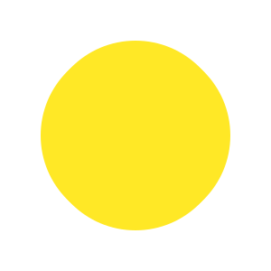

:doodle {@grid: 100x1 / 99vmax;}
:container {@size: 150%; transform: scale(8) translateY(15%) translateX(12%) rotate(45deg);}
@place-cell: center;
border-radius: 50%;
transform: rotate(@rand(-.5deg, .5deg, .1));
height: 20%;
width: calc(100% - @calc(@index() -1) * 100% / @size());
background: @pick(#cdeaf4, #bde0edx, #acd2e0, #aadbed);
